내일의 어린이실
궁금한 마음이 이끄는 대로
Where curiosity meets the beauty and wonder of the world
〈내일의 어린이실〉은 공공도서관의 어린이실을 ‘어린이의 경험 중심’으로 새롭게 조성하는 프로젝트입니다. 도서관이 오늘을 살아가는 어린이들의 궁금한 마음에 귀를 기울이고 새로운 질문과 탐색을 해나가도록 지원합니다. 재단법인 씨앗이 공공도서관과 함께, 다양한 전문가와 협력하여 만들고 있습니다.
이 페이지는 2023년부터 이어온 조성 과정과 그 결과를 기록한 아카이브입니다. 첫 번째 어린이실은 2024년 12월 천안두정도서관에 문을 열었습니다.
assets/img/hero/ 에 hero-1.jpg … hero-5.jpg 를 넣으면 돌아가며 보입니다
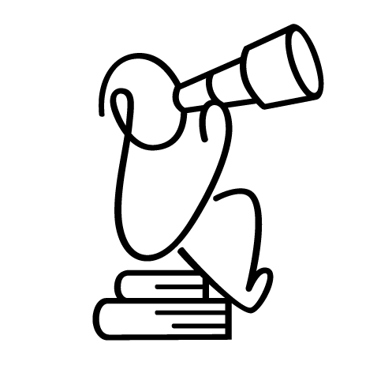
Part 1
내일의 어린이실이란
“오늘을 살아가는 어린이들에게 도서관은 어떤 공간이 되어야 할까요?”
어린이를 위한 공공도서관의 내일을 준비하는 〈내일의 어린이실〉 프로젝트가 품은 질문입니다. 〈내일의 어린이실〉 프로젝트는 공간을 설계하고 콘텐츠를 기획하는 모든 과정의 중심에 ‘어린이의 경험’을 두는 것에서 이 질문에 대한 답을 찾을 수 있다고 생각했습니다.
어린이들의 목소리가 담겨 있습니다. 소리를 켜고 보시길 권합니다.
영상 기획·제작 스튜디오 펩스 · 음악 이제인
시작한 질문
도서관의 어린이실은 이미 어린이들이 잘 '이용'하는 곳입니다. 보호자와 함께 방문하여 추천 책을 읽거나 빌려 가는 어린이, 때때로 문화 강좌가 열릴 때 강좌에 참여하기 위해 도서관에 찾아오는 어린이. 도서관의 공간과 서비스를 잘 이용하는 모습입니다.
〈내일의 어린이실〉은 도서관의 가능성에 주목했습니다.
- 도서관에서 어린이가 스스로 자유롭게 머물며 각자의 질문에 따라 다양한 탐색을 할 수 있다면?
- 도서관에서 시도하고 몰입하고 표현하는 기회가 생긴다면?
- 도서관이 어린이 이용자 간의 새로운 만남과 연결의 장이 되어 준다면?
지향하는 어린이 경험
이 질문들의 답을 찾아가며, 어린이가 도서관에서 할 수 있는 경험을 새롭게 정의하였습니다. 이 경험들은 단편적인 활동으로 분절되지 않고, 도서관에 머무는 동안 자연스럽게 서로를 넘나들며 이어집니다. 〈내일의 어린이실〉 프로젝트는 이러한 경험들이 일상적으로 발현될 수 있도록 공간, 콘텐츠, 운영 방식을 함께 설계해 나가는 과정이었습니다.
- Curiosity탐색
- 스스로의 질문을 찾고 발견하는 과정. 서가와 전시대를 둘러보는 경험에서부터 그중 한 권의 책, 작품을 몰입하여 들여다보는 경험을 포괄합니다.
- Creativity창조
- 자신의 이야기를 글로 쓰거나 손으로 만들어 보는 시도. 작업을 이어 가며 프로젝트를 만들어 가는 과정 모두를 포함합니다.
- Connection연결
- 나와 다른 친구들의 세계를 만나는 경험. 직접적인 대화 외에도 다른 친구가 남긴 작품, 이야기에 닿아 보는 느슨한 연결까지 다양한 방식으로 일어납니다.
자료실과 작업실을 함께
경험을 확장하기 위해 도서관의 자료실을 넘어 작업실을 함께 조성하였습니다. 탐색 과정에서 발견한 것을 표현하고, 다른 사람들의 작품을 들여다보며 나의 관심사와 다시 연결해 보고 또 다른 질문으로 이어져 탐색이 시작될 수 있도록 하였습니다. 어린이들은 자료실과 작업실을 넘나들며 스스로 하고 싶은 경험을 선택하고 계획하는 주체적인 이용자로 성장합니다.
지금까지
-
#1 천안두정도서관
충청남도 천안시. 첫 번째 〈내일의 어린이실〉.
-
#2 익산시립모현도서관
전북특별자치도 익산시. 두 번째 〈내일의 어린이실〉.
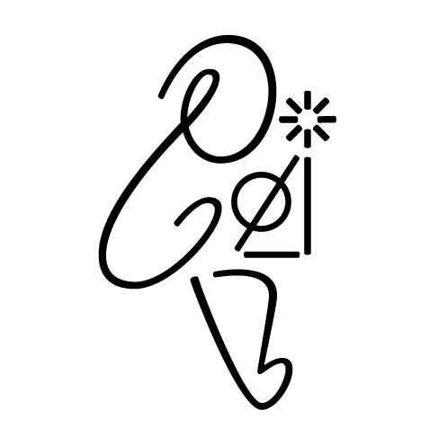
Part 2
어린이들의 작업실
〈내일의 어린이실〉에는 8–13세 어린이만을 위한 공간, “0813 작업실”이 있습니다. 어린이의 관심사에서 출발하여 세상에 대한 관점을 넓힐 수 있는 책 큐레이션, 그리고 이야기의 세계를 직접 구현해 볼 수 있는 재료와 도구가 준비되어 있습니다. 서가와 작업 테이블을 넘나드는 경험의 여정을 직접 확인하고 있습니다.

큐레이션 서가
이용자 관심사를 확인할 수 있는 대출 및 열람 데이터, 검색 데이터, 설문 데이터를 분석하여 수서를 진행하였습니다. 0813 작업실의 서가만큼은 기존 서가의 문법인 KDC 분류를 따르지 않고 어린이가 직접 관심사를 발견할 수 있는 주제의 이야기로 큐레이션을 기획하였습니다. 나아가 어린이 책에 대한 관점을 확장할 수 있는 서가이길 바랐습니다.
수서 원칙
처음 만나는 주제
어린이가 관심 있어 하지만 도서관에서 만나기 어렵거나 한 번에 찾기 어려웠던 주제의 책
익숙한데 낯선
주제는 익숙하지만 장르·형식 면에서 쉽게 만나기 어려웠던 책
감각하는 책
신기한 형태와 물성을 가진 책. 읽는 것뿐 아니라 다른 감각으로도 경험할 수 있는 책
주제에는 ‘과학이 만드는 세계’처럼 익숙한 것도 있지만, ‘변하는 것과 사라지는 것’, ‘오늘의 세계’처럼 복합적이고 추상적인 것도 있습니다. 어린이의 일상을 둘러싼 주제를 직관적인 말로 제안하고, 새로운 형태와 물성의 책을 꾸준히 발굴해 어린이의 세계를 넓히고자 했습니다. 13가지 대주제 아래 73가지 소주제로, 약 2,300권 규모입니다.
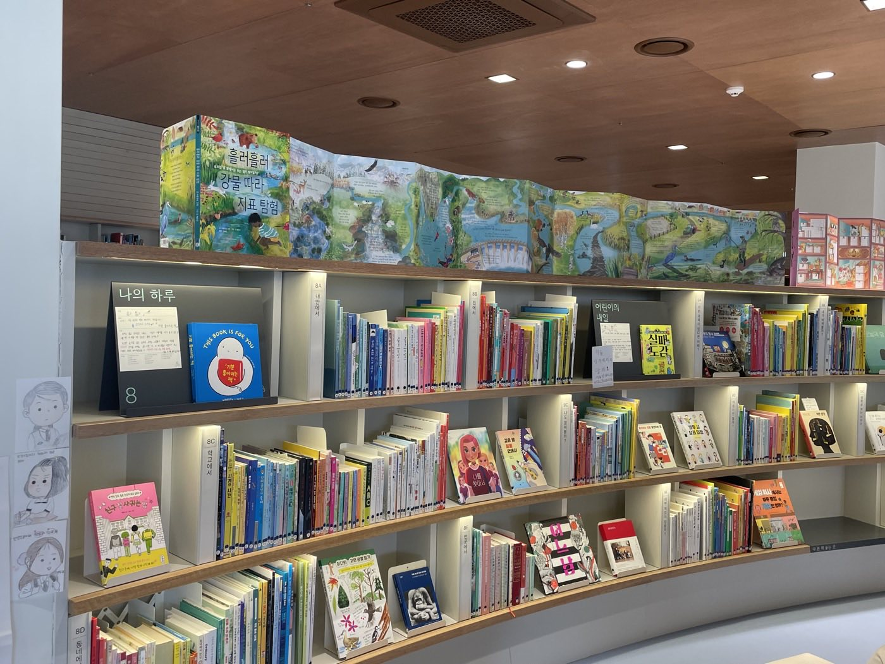
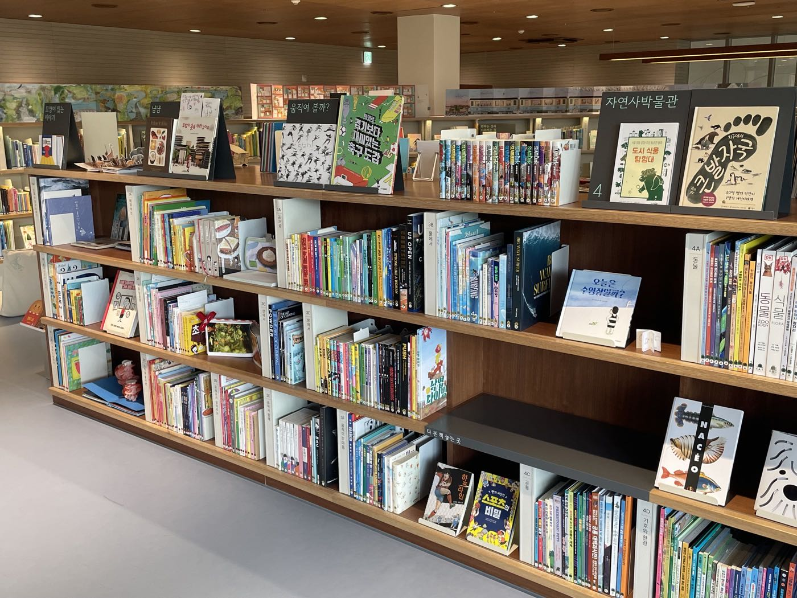
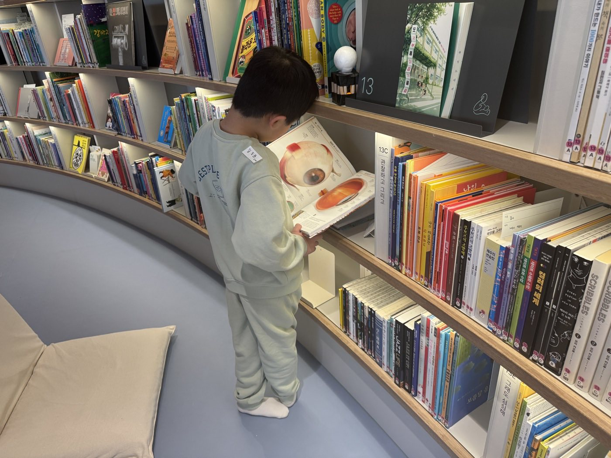
큐레이션 서가 : 어린이 관심사 기반의 13가지 주제 컬렉션
- 모양이 있는 이야기 손으로 만지고 눈으로 느껴보는 즐거운 책이 모여있어요.
- 냠냠 음식과 식탁을 둘러싼 맛있는 이야기를 살펴봐요.
- 움직여 볼까? 운동과 스포츠를 좋아하나요? 보고 나면 몸을 움직이고 싶을 거예요!
- 자연사박물관 동물과 식물, 자연과 우주까지! 생명을 사랑하는 탐험가를 위한 이야기 박물관에 초대합니다.
- 세상의 모든 도감 궁금한 주제를 자세히 들여다볼 수 있는 도감들이 모여있어요.
- 사건현장에 초대합니다 이상하고 신비하고 수상하고 기묘한 이야기를 좋아한다면?
- 떠나자 여행 우리가 사는 한국에서 저 멀리 세계까지, 도시와 자연을 찾아 모험과 여행을 시작해요.
- 나의 하루 우리 집, 우리 학교, 우리 동네 속 나와 닮은 이야기가 있나요?
- 어린이의 내일 미래의 삶이 궁금하다면, 내가 미래를 바꾸고 싶다면?
- 오늘의 세계 서로 다른 우리가 함께 잘 살려면 어떻게 해야 할까요?
- 변하는 것과 사라지는 것 영원한 것이 있을까요? 다양한 주제를 살펴보며 질문해봐요.
- 과학이 만드는 세계 과학과 기술이 바꾸는 세상에 대한 새로운 질문을 던져봐요.
- 심심할 때 뭐해? 상상하고 그리고 관찰하고 만드는 즐거움으로 심심할 틈 없는 시간을 보내봐요.

재료·도구와 작업 테이블
어린이실에서 콘텐츠란, 어린이들이 스스로 탐색하고 시도할 수 있도록 돕는 모든 경험의 재료를 말합니다. 〈내일의 어린이실〉에서는 책뿐만 아니라 170여 종의 재료와 도구들, 다른 친구들이 만들고 적어둔 이야기와 작업, 모든 것이 어린이들에게 영감의 재료가 됩니다.
어린이들은 친구들이 만든 작품을 둘러보며 감상하기도 하고 자신의 작업에 참고하기도 하며, 새로운 재료와 도구를 활용해 안 해 봤던 작업을 시도해 보기도 합니다. 오랜 시간에 걸쳐 몰입하여 작업을 진행하는 모습도 보입니다. 나아가 다른 친구들에게 작품을 보여주기도 하고 의견을 나누며 느슨하게 연결되기도 합니다.
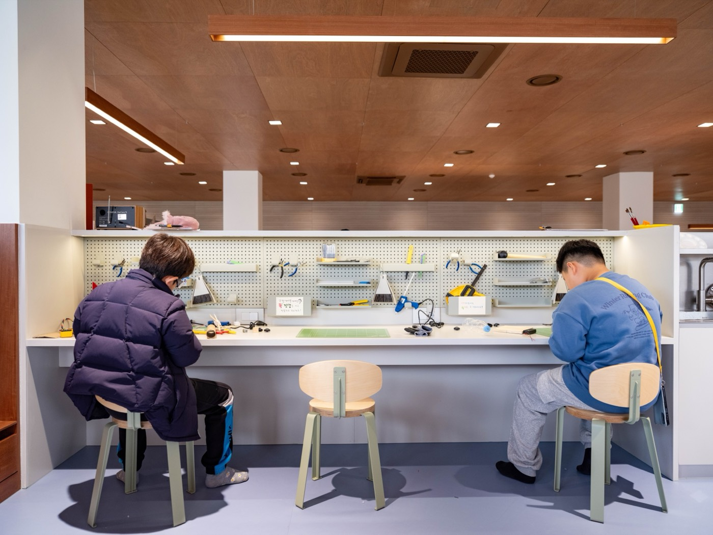
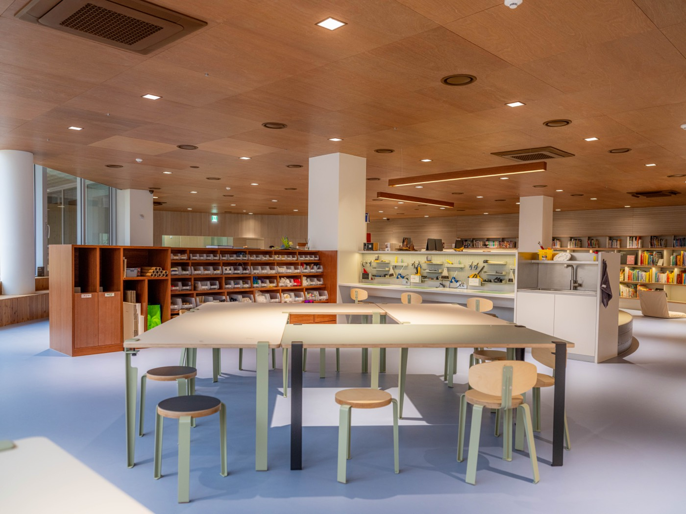
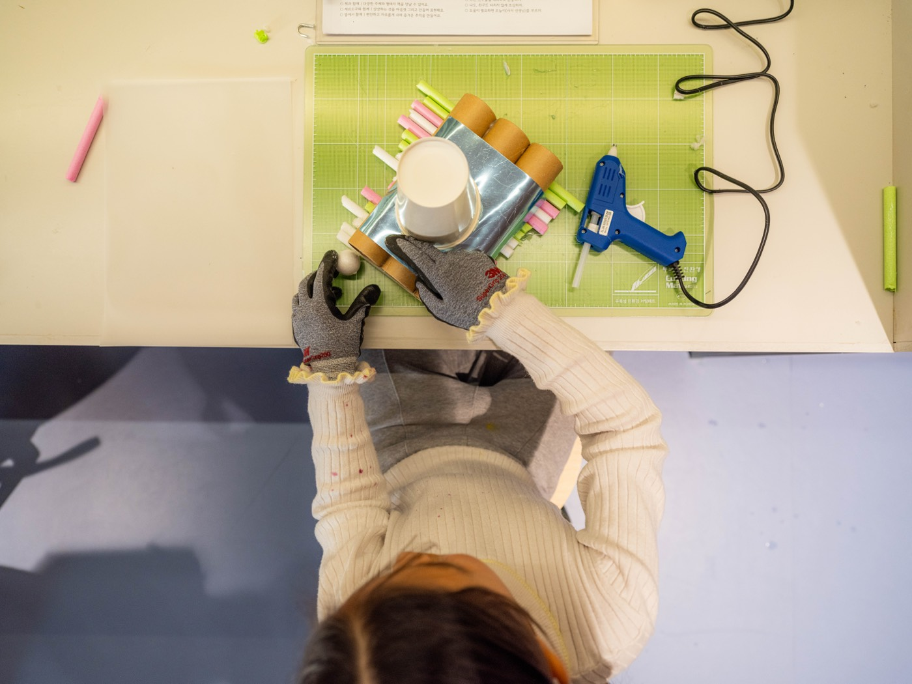
앞뜰
〈내일의 어린이실〉에는 앞뜰도 있습니다. 도서관의 외부 공간이었던 곳을 어린이실 내부로 편입하여 어린이들이 안과 밖을 오가며 머물 수 있도록 기획되었습니다. 어린이실에서 바로 보이는 앞뜰의 풍경 덕분에 더 많은 어린이들이 도서관으로 쉽게 들어옵니다.
앞뜰은 어린이들의 전체 경험 여정에서 휴식하거나 잠시 숨을 고르고 환기하는 공간이 되어 줍니다. 덕분에 어린이들은 도서관에 더 오래 머물며 경험을 이어 갑니다. 또한 기획 단계의 리서치에서 어린이들이 직접 언급했던 '자연과 연결된 공간'이라는 니즈를 반영한 공간이기도 합니다. 어린이들은 책을 읽을 자리로 앞뜰을 고르기도 하고, 혼자 또는 친구와 함께 편한 자세로 쉬거나 뛰어놉니다. 앞뜰 덕분에 어린이실의 장면이 더욱 다채로워졌습니다.
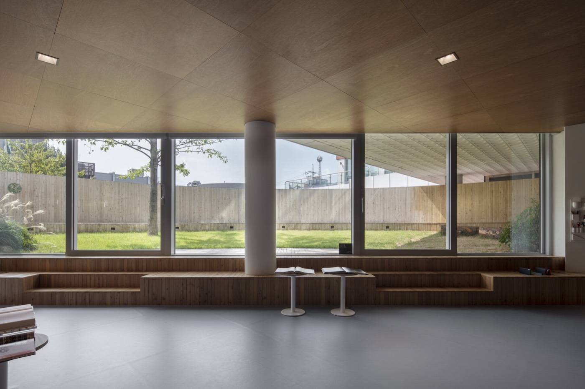
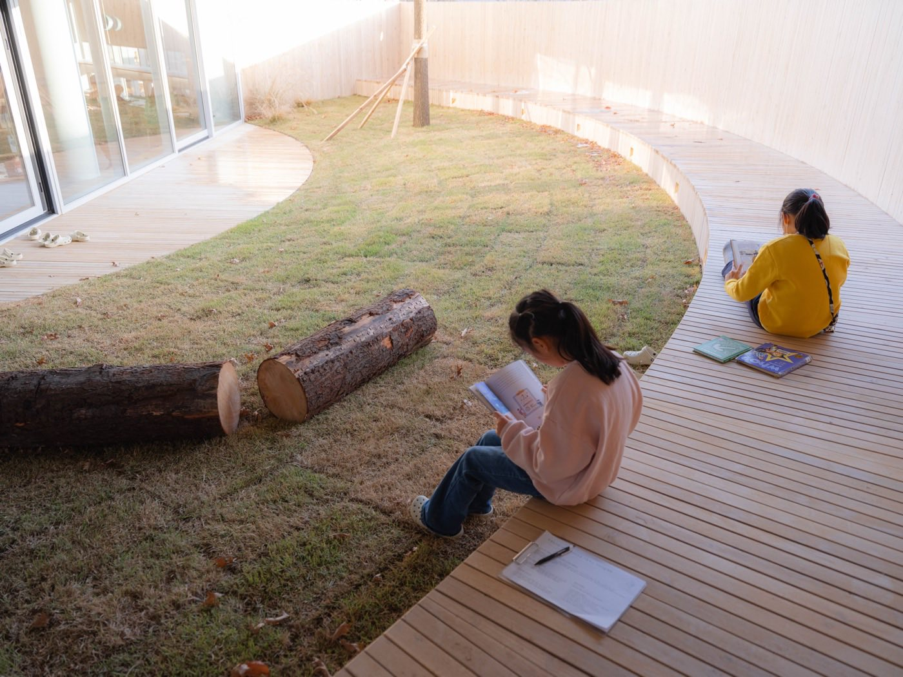
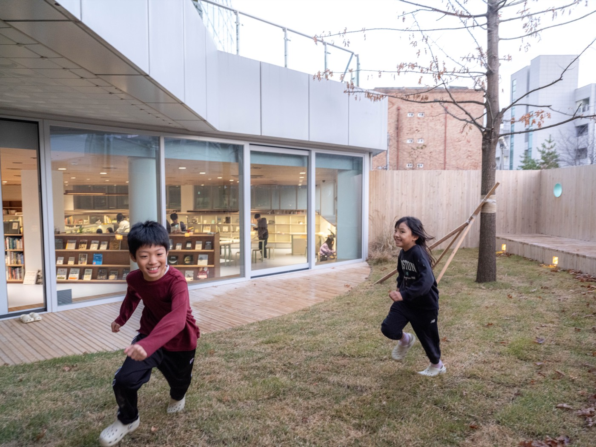
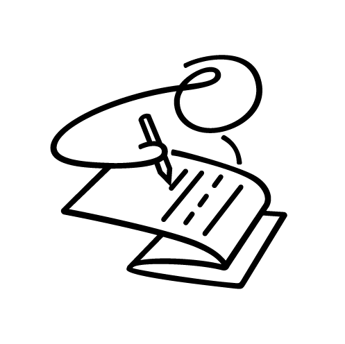
Part 3
#1 천안두정도서관
천안두정도서관 어린이실은 공모에서 개관까지 1년 3개월여의 시간이 걸렸습니다. 공간을 구체적으로 설계하기 전, 천안의 어린이들을 먼저 관찰하였고, 책을 고르기 전 어린이들의 관심사를 먼저 확인했습니다. 이렇게 어린이들의 필요를 파악한 뒤 공간, 콘텐츠, 운영 기획을 시작했습니다.
함께 걸어온 길
이용자 리서치 단계를 통해 공간의 기획 방향을 도출한 뒤, 공간, 콘텐츠, 운영 기획이 동시에 진행되었습니다. 각 영역의 전문가 팀이 긴밀하게 소통하며 콘텐츠를 담는 그릇으로서의 공간을 설계하고, 그 안에서의 어린이 경험을 상상하며 운영 정책을 정리했습니다. 단계별로 도출된 결과물 중 일부는 아래 표에서 확인할 수 있습니다.
리서치
준비
← 옆으로 넘기면 전체 과정을 볼 수 있습니다 →
↗ 우상단 화살표 표시를 누르면 해당 단계의 결과물을 보실 수 있습니다
전시에 걸렸던 원본 맵에는 각 단계의 현장 사진이 담겨 있습니다. 원본 보기 →

몇 가지 중요한 지점
모든 단계가 중요했지만, 특히 도서관팀이 용기 있게 의사결정한 과정이 있습니다.
개관하기 1년 전, 프로젝트 시작부터 참여한 운영팀23.11 운영방향에 따른 운영팀 인력 확충
가장 중요했던 것은 공간을 다 만든 뒤 운영팀이 배정되는 것이 아니라, 프로젝트 처음부터 이 공간을 운영할 운영팀이 참여한 것입니다. 리서치 과정부터 새로운 공간, 공간에 담기는 콘텐츠, 그에 맞는 운영의 방식을 결정하는 모든 과정에 실제 운영할 팀이 참여하면서 초기의 기획 방향대로 운영될 수 있도록 준비하였습니다.
설계에서 끝까지 포기하지 않은 원칙24.3.27 디자인 방향 기획. 1차 layout
한정된 공간에 필요한 공간 요소를 효율적으로 배치하면서도 끝까지 지킨 것은 어린이들의 경험 공간을 어린이실 중앙에 위치시켜, 입구부터 어린이들의 자유로운 경험을 환대하는 공간이라는 것을 어린이들이 바로 인지할 수 있게 하는 것이었습니다. 이러한 공간 배치는 어린이실에서 가장 중요한 이용자는 어린이라는 것을 모두가 알 수 있게 합니다.
장서 수를 지키는 대신 탐색 경험 개선24.4-6 대출서가 감축에 따른 장서작업
두정도서관팀은 어린이실 대출 서가의 책을 7만여 권에서 3만 권 수준으로 줄였습니다. 이는 장서 수 대신 탐색하기 좋은 환경을 선택한 것입니다. 오랫동안 대출되지 않은 책과 파본은 폐기하고, 복본은 정리하고, 보관이 필요한 책은 수장고로 옮겼습니다. 책은 줄었지만, 쾌적해진 서가 사이에서 이용자들은 더 편하게 원하는 책을 찾을 수 있었고, 대출은 늘어났습니다.
만든 이들의 이야기
리서치·공간·콘텐츠·운영을 맡은 사람들이 무엇을 보고 고민하며 기획했는지, 그 과정이 어떤 의미였는지 네 편의 인터뷰 영상에 담았습니다.
인터뷰 1
매일의 경험: 어린이들의 경험과 콘텐츠
“〈내일의 어린이실〉은 기존의 어린이실과 어떻게 다른가요?”
“〈내일의 어린이실〉 프로젝트의 슬로건이 '궁금한 마음이 이끄는 대로'인데요, 어린이들이 스스로 자기 호기심을 지키고, 그 호기심을 따라가보면서 이를 기반으로 새로운 경험을 해보는 시간이 필요하다고 생각했습니다.”
재단법인 씨앗 · 내일의 어린이실 운영팀
인터뷰 2
아름다운 공간: 공간 기획의 의도
“어떤 요소가 좋은 공간을 만드는 것일까요?”
“공간을 디자인한다는 것은 공간의 질서를 만드는 개념이라고 생각합니다. 예컨대 선과 선이, 선들이 만들어내는 면과 면이 어떻게 결합해서 안정감 있는 시각적 프레임을 만들어줄 것이냐 같은 것들입니다.”
어린이 자문단 · The First Penguin 공간팀
인터뷰 3
오늘의 어린이: 어린이와 함께 만든 과정
“이 프로젝트에서 리서치는 어떤 역할을 했나요?”
“우리의 생각이나 틀을 배제하면서 어린이를 이해하는 데 집중하고, 어린이를 통한 디자인을 가능하게 하는 효과가 있었습니다.”
WIO labs 리서치팀 · 내일의 어린이실 운영팀
인터뷰 4
협업의 기쁨: 참여한 모든 팀이 함께한 과정
“함께 만드는 과정은 어땠나요?”
“결정하고 소통하는 날들이 연속이었어요. 첫 번째로 조성되는 〈내일의 어린이실〉이다 보니 관련된 모든 분께서 좋은 공간을 만들려는 통합적인 시선에서 함께 이해해 주셔서 결과적으로 좋은 공간이 나온 것 같습니다.”
WIO labs 리서치팀 · The First Penguin 공간팀 · 내일의 어린이실 운영팀 · 어린이 자문단
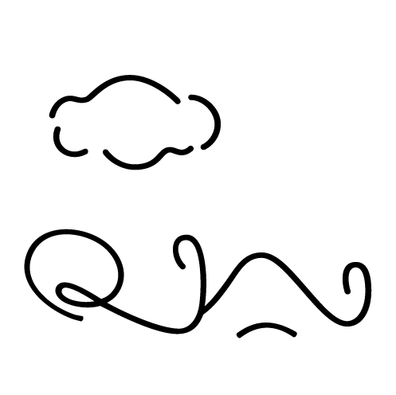
Part 4
Pre-open#2 익산시립모현도서관
더 많은 어린이가 도서관에 더 오래 머물며 스스로 서가와 작업실 사이를 탐색할 수 있도록 새로운 시도를 더해 보고 있습니다.
탐색하고 작업하는 경험에 몰입할 수 있도록 공간의 적정한 조도를 설계하고, 어린이 스스로 책을 찾을 수 있도록 그래픽과 사이니지 시스템을 개선하며, 몸이 불편한 어린이들도 자유롭게 이용할 수 있는 물리적 환경에 대한 기준을 마련합니다.
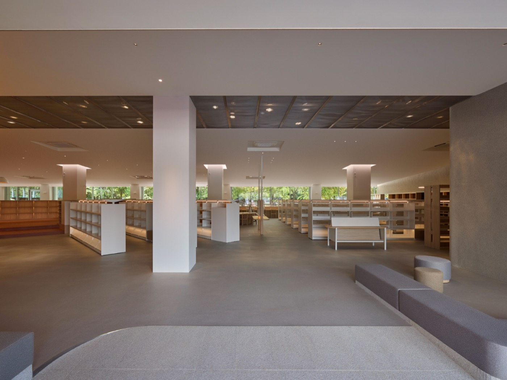
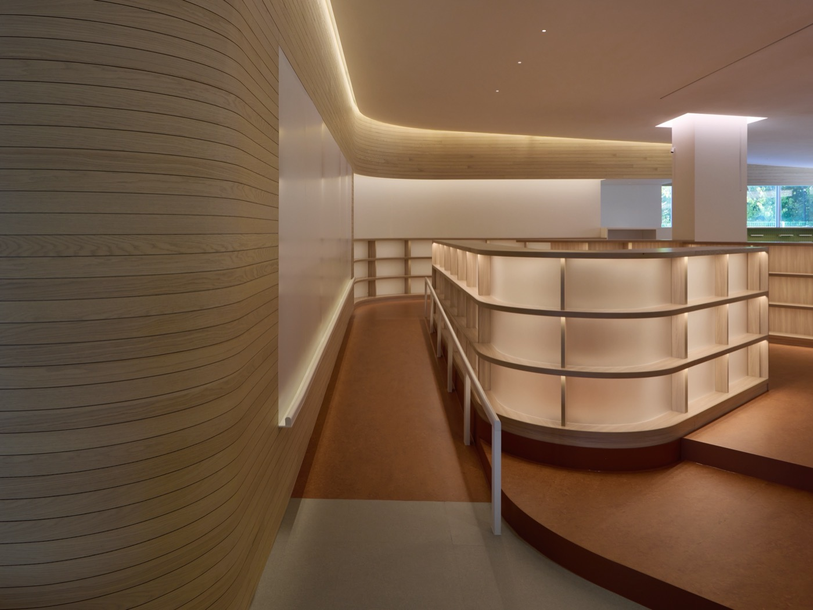
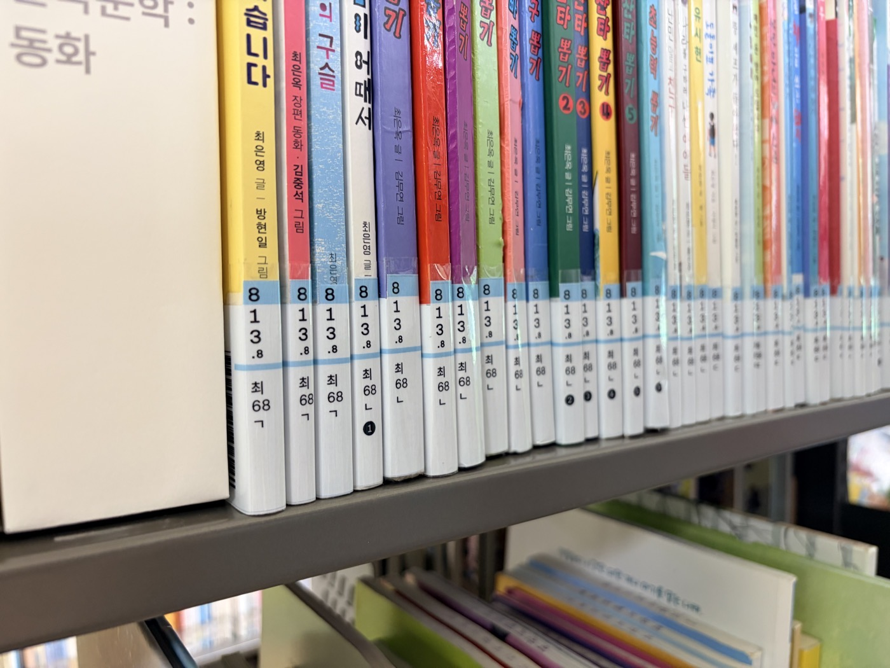
2026년 12월 중 개관 예정입니다.
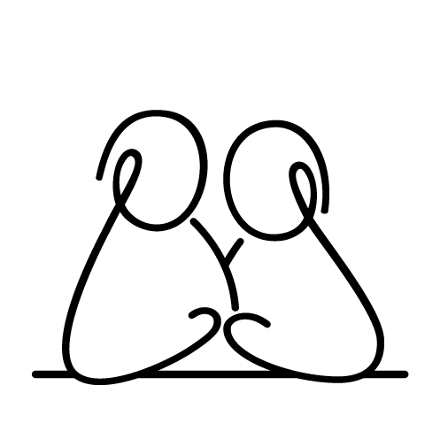
Part 5
맺으며
〈내일의 어린이실〉이 어린이의 경험을 '이렇게까지' 세심하게 고민하며 구현해 낸 촘촘한 과정이 어린이를 위한 도서관을 고민하는 분들께 구체적인 참고 사례가 되길 바랍니다. 나아가 더 많은 공공도서관 관계자분들과 함께 어린이들이 도서관에서 쌓아갈 새로운 경험을 기대하고 상상해 볼 수 있기를 바랍니다.
함께한 사람들
주최
- 재단법인 씨앗
#1 천안두정도서관
- 천안시 두정도서관
- WIO labs
- The First Penguin
- 두정도서관 어린이들
#2 익산시립모현도서관
- 익산시 · 익산시립모현도서관
- WIO labs
- BM Studio
- NETHE
- rojotype
- 모현도서관 모모단 어린이들
문의
〈내일의 어린이실〉 프로젝트에 대해 궁금한 점이 있으시면 재단법인 씨앗으로 연락 주세요.
- 메일 children@see-art.org
- 전화 031-753-7090
- 홈페이지 see-art.org